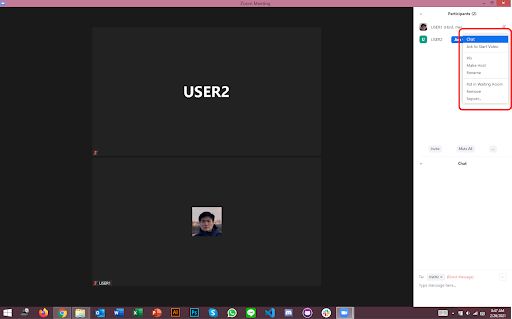
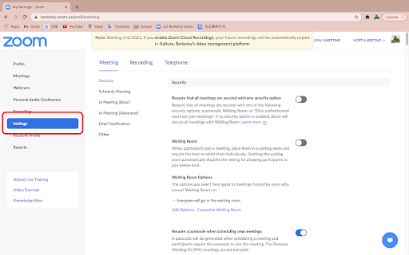
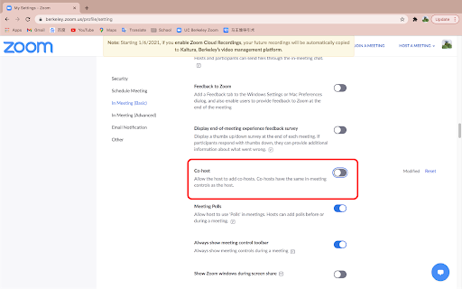
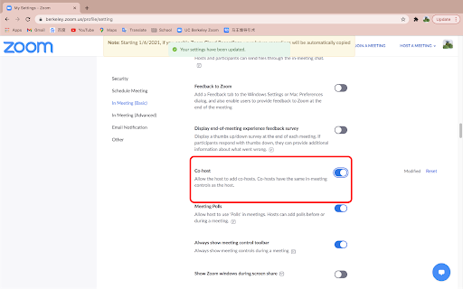
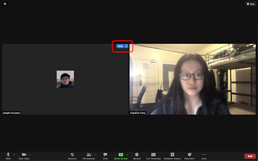
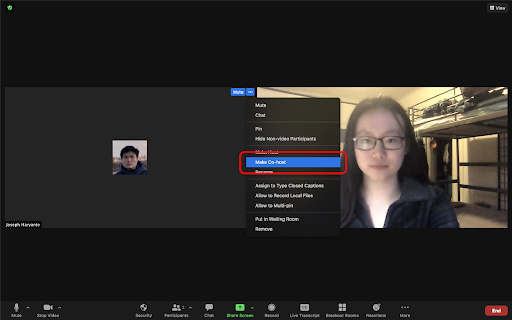
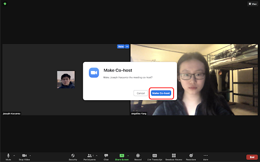

Zoom Host/Co-Host Features
Video Manual
Learn through our comprehensive and quick video explanation!
Written and Photo Manuals
Learn by reading through our detail-oriented and carefully curated written and photo manuals.
Zoom host features:
1. Send a direct message to a selected participant.
2. Ask a selected participant to turn on their camera.
3. Pin or unpin a selected participant.
4. Make a selected participant the host of the meeting.
5. Rename a selected participant.
6. Put a selected participant in a waiting room.
7. Remove a selected participant from the Zoom meeting.
8. Report a selected participant to Zoom.
How to Enable the Co-Host Feature:
1. Sign into the Zoom web portal as an administrator with the privilege to edit Account settings, and click Account Settings.
2. On the Meeting tab under the In Meeting (Basic) section, locate the Co-host setting and verify that is enabled.
3. If a verification dialog displays, choose Turn On to verify the change.
4. (Optional) If you want to make this setting mandatory for all users in your account, click the lock icon, and then click Lock to confirm the setting.
How to allocate co-host during a meeting (method 1):
1. Hover your mouse cursor over a user's video.
2. Click the Blue Ellipsis Icon. A dropdown will appear.
3. Click Make Co-Host.
How to allocate co-host during a meeting (method 2):
1. Navigate to the bottom of the meeting window. Click the Manage Participants button.
2. Hover your mouse cursor over the selected user’s name. Click on More. A drop-down will appear.